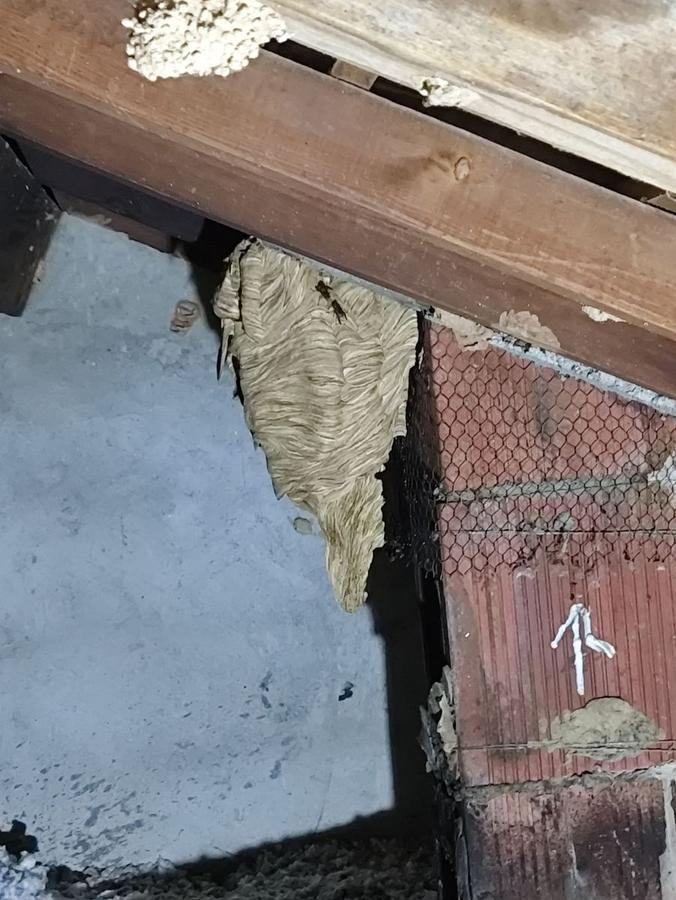
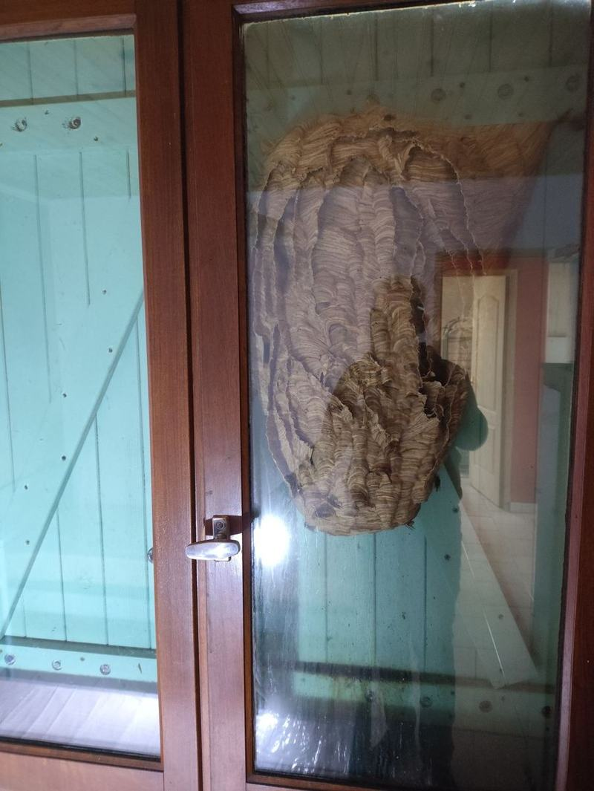
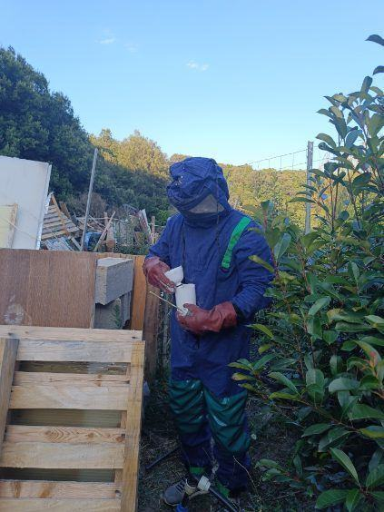
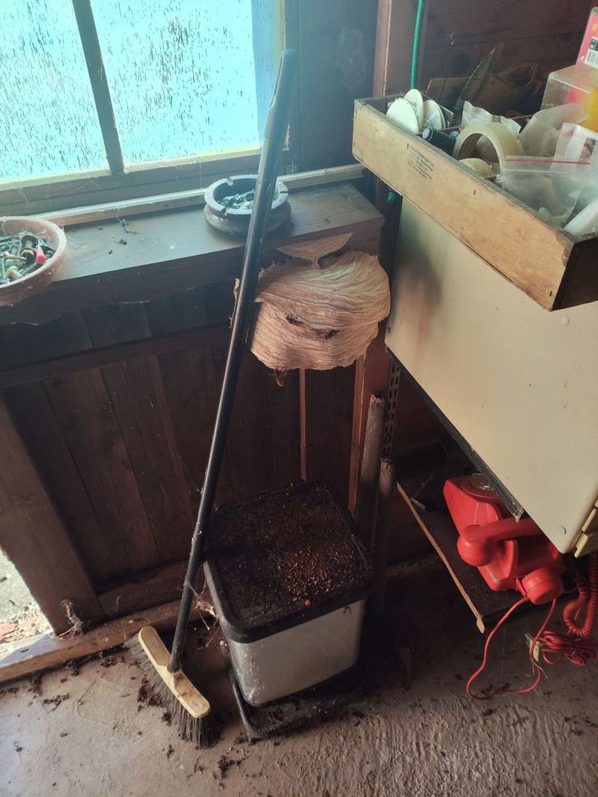
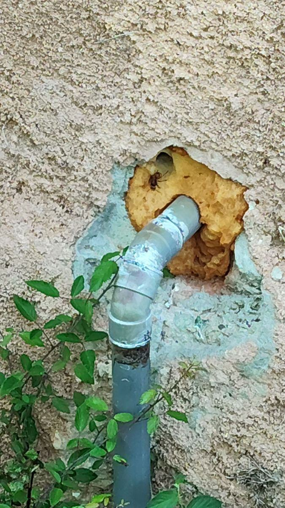
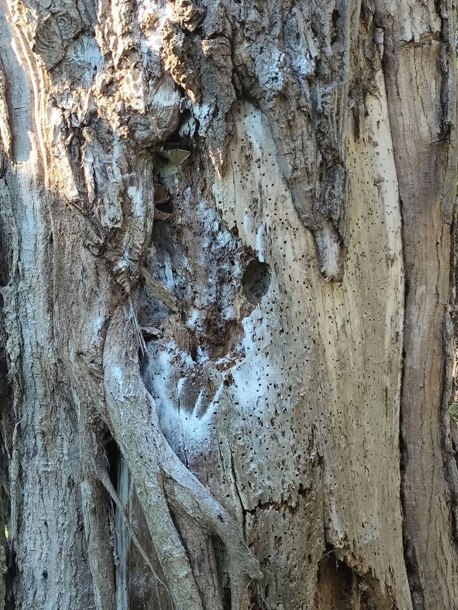

Implantée en Costa Verde, l'équipe Dezinsect Corse intervient en urgence sur la Plaine Orientale et dans toute la Corse pour neutraliser en toute sécurité tous types de nids.
Intervention à partir de 100 €, selon l’accessibilité et la taille du nid. Devis gratuit.
Siège social Costa Verde
Intervention rapide 7j/7
Équipement pro & biocides
Technicien certifié
Espèces identifiées & interventions
Alerte vigilance Corse
Frelon Asiatique (Vespa velutina)
En progression sur le territoire corse. Reconnaissable à son thorax noir, sa face orange et ses pattes jaunes, l'ouvrière mesure 17 à 32 mm. Ses nids sphériques, souvent installés en hauteur, peuvent atteindre 80 cm de diamètre et abriter plusieurs milliers d'individus en fin de saison.
Très agressif à proximité du nid
Nids fréquents en hauteur dans les arbres, sous toiture ou génoises
Traitement biocide ciblé pour l'élimination totale de la colonie
Nouvelle espèce détectée
Frelon Oriental (Vespa orientalis)
Espèce détectée en Corse en 2025, après l'arrivée du frelon asiatique en 2024. Reconnaissable à sa couleur brun-rouge uniforme avec des bandes abdominales jaune orangé, sans les motifs contrastés du frelon asiatique. Contrairement aux autres espèces, il tolère bien la chaleur et l'aridité, ce qui en fait un colonisateur potentiel du littoral corse.
Espèce encore peu documentée localement, vigilance recommandée
Nids souvent installés dans des cavités souterraines ou des murs
Tout signalement doit être doublement déclaré : à nous et sur la plateforme officielle
Très présent en Corse
Frelon Européen (Vespa crabro)
Particulièrement répandu dans le maquis et les zones boisées. Plus imposant (25 à 35 mm), teinté de jaune, rouge-brunâtre et noir. Vol possible même de nuit.
Nids installés dans les troncs creux, combles, granges ou cheminées
Piqûre très douloureuse exigeant une neutralisation rapide
Mise en sécurité immédiate des occupants de l'habitation
Risque domestique
Guêpes Communes & Germaniques
Rayures jaunes et noires très vives. Nids fermés en papier mâché installés sous les tuiles, dans le sol ou les coffres de volets roulants.
Forte nuisance autour des terrasses, tables et balcons
Comportement défensif en cas d'approche du nid
Traitement par poudrage ou nébulisation sous pression
Fréquent sous pergola
Guêpes Polistes
Silhouette allongée aux pattes arrière pendantes en vol. Fabrique de petits nids ouverts (sans enveloppe) sous les avancées de toit, pergolas et baies vitrées.
Présence fréquente au printemps et en été
Attaque immédiate si le nid est frôlé ou manipulé
Destruction rapide et élimination des alvéoles
Notre protocole d'intervention
1
Diagnostic à distance
Description du nid par téléphone (emplacement, taille, activité) pour préparer le bon équipement et évaluer le degré d'urgence.
2
Sécurisation de la zone
Tenue de protection intégrale, éloignement des personnes et animaux, repérage des voies d'accès et de retraite avant toute action sur le nid.
3
Traitement biocide ciblé
Application d'un insecticide professionnel directement dans le nid (poudrage ou nébulisation selon l'accès), pour une élimination de la colonie à la source.
4
Retrait & vérification
Retrait du nid si l'accès le permet, contrôle de l'absence d'activité résiduelle et conseils pour éviter qu'un nouveau nid ne s'installe au même endroit.
Comment repérer un nid avant qu'il grossisse
Un nid de guêpes ou de frelons repéré tôt (quelques centimètres) se traite plus vite, avec moins de risques, qu'un nid installé depuis plusieurs semaines. Quelques signes à surveiller :
Va-et-vient répété d'insectes vers un même point (charpente, gaine, cavité murale, arbre creux)
Petite structure grise en forme de coupole ou de boule, visible sous un débord de toit ou dans un angle
Bruit de bourdonnement régulier provenant d'un mur, d'un coffre de volet roulant ou des combles
Présence inhabituelle de frelons autour d'un point d'eau, d'un compost ou d'un arbre fruitier en été
Important : ne tentez jamais de détruire un nid vous-même (eau, feu, bombe insecticide grand public) — cela disperse les insectes plutôt que d'éliminer la colonie, et augmente fortement le risque de piqûres. Contactez-nous dès le repérage, même pour un nid de petite taille.
Nos interventions en Corse

Nid de frelons repéré sous une charpente

Nid volumineux détecté en intérieur

Intervention équipée et sécurisée

Nid découvert dans une remise

Nid naissant repéré dans une cavité murale

Nid de frelons traité dans la cavité d’un tronc
Périmètre d'intervention guêpes & frelons en Corse
Le frelon asiatique construit un nid sphérique souvent volumineux, en hauteur dans les arbres ou sous les toitures, avec une ouverture unique sur le côté. L'insecte a un thorax noir, une face orange et des pattes jaunes.
Faut-il détruire soi-même un nid de guêpes ou de frelons ?
Non, ce n'est pas recommandé. Une intervention non maîtrisée expose à un risque de piqûres multiples, en particulier avec le frelon asiatique. Un technicien certifié dispose de l'équipement et des biocides adaptés pour neutraliser la colonie en sécurité.
En combien de temps intervenez-vous en cas d'urgence ?
Nous intervenons généralement le jour même pour une urgence guêpes ou frelons, avec un service disponible 7j/7 sur la Costa Verde, la Plaine Orientale et l'ensemble de la Corse.
Quel est le prix d'une intervention pour un nid de frelons ?
Le tarif d'une intervention pour un nid de frelons débute à partir de 100€, selon l'accessibilité du nid, sa taille et l'espèce concernée. Un devis gratuit et précis vous est communiqué avant toute intervention.
Qu'est-ce que le frelon oriental détecté récemment en Corse ?
Le frelon oriental (Vespa orientalis) est une troisième espèce détectée en Corse en 2025, après l'arrivée du frelon asiatique en août 2024. Il se distingue par une couleur brun-rouge uniforme et des bandes jaune orangé sur l'abdomen, sans les motifs contrastés du frelon asiatique. Il tolère bien la chaleur, ce qui pourrait favoriser son installation sur le littoral. Cette espèce étant encore peu documentée localement, tout signalement doit être fait à la fois auprès de notre équipe et sur la plateforme officielle ALIEM, qui centralise les données de surveillance en Corse.